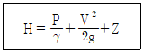
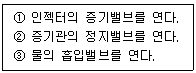
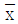
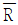

에너지관리기능장 (2009-07-12 기출문제)
1과목: 임의 구분
1. 강제순환 보일러의 특징 설명으로 가장 거리가 먼 것은?
- 순환속도를 빠르게 설계할 수 없어 열전달률이 낮다.
- 기수 혼합물의 순환경로 저항을 감소시킬 필요가 없으므로 자유로운 구조의 선택이 가능하다.
- 고압 보일러에 대하여서도 효율이 좋으며 증기발생이 양호하다.
- 수관의 과열방지를 위해서 각 수관에 물이 균일하게 흘러야 한다.
(정답률: 88%)

2. 전열면적 50m2, 증기발생량 3000kg/h, 사용압력 0.7MPa 인 보일러의 전열면 증발율은 몇 kg/m2·h 인가?
- 7
- 10
- 30
- 60
(정답률: 45%)
3. 일반적으로 보일러의 열손실 중 최대인 것은?
- 배기가스에 의한 열손실
- 불완전 연소에 의한 열손실
- 방열(放熱)에 의한 열손실
- 미연분에 의한 열손실
(정답률: 86%)
4. 열적 검출방식으로 화염의 발열 현상을 이용한 것으로 연소온도에 의해 화염의 유무를 검출하고 감온부는 바이메탈을 사용한 검출기는?
- 플레임 아이
- 스택 스위치
- 플레임 로드
- 광전관
(정답률: 67%)
5. 증기 보일러에서 증기압력 초과를 방지하기 위해 설치하는 밸브는?
- 개폐밸브
- 역지밸브
- 정지밸브
- 안전밸브
(정답률: 94%)
6. 보일러의 자동제어에서 증기압력제어는 어떤 량을 조작하는가?
- 노내 압력량과 기압량
- 급수량과 연료공급량
- 수위량과 전열량
- 연료공급량과 연소용 공기량
(정답률: 82%)
7. 온수난방용 순환펌프 설치시 시공 요령으로 틀린 것은?
- 순환 펌프의 모터부분은 수평으로 설치해야 한다.
- 순환 펌프 양측은 보수 정비를 위해 밸브를 설치한다.
- 순환 펌프는 보일러 동체, 연도 등에 의한 방열에 의해 영향을 받을 우려가 없을 곳에 설치해야 한다.
- 순환 펌프는 방출간 및 팽창관의 작용을 차단할 수 있어야 한다.
(정답률: 74%)
8. 방열기의 호칭에서 벽걸이 수직형을 나타내는 표시는?
- W - H
- W - V
- W - Ⅲ
- Ⅲ - H
(정답률: 85%)
9. 일반적인 연소에 있어서 이론 공기량 Ao, 실제 공기량 A, 공기비 m 이라 할 때 공기비를 구하는 식은?
- m = Ao/A - 1
- m = Ao/A + 1
- m = Ao/A
- m = A/Ao
(정답률: 79%)
10. 보일러 설치시 만족시켜야 하는 조건으로 틀린 것은?
- 보일러의 사용압력은 특별한 경우에는 최고사용압력을 초과할 수 있도록 설치해도 된다.
- 기초가 약하여 내려앉거나 갈라지지 않는다.
- 수관식 보일러의 경우 전열면을 청소할 수 있는 구멍이 있어야 한다. 다만, 전열면의 청소가 용이한 구조인 경우에는 예외로 한다.
- 강 구조물은 접지되어야 하고 빗물이나 증기에 의하여 부식이 되지 않도록 적절한 보호조치를 하여야 한다.
(정답률: 96%)
11. 증기난방과 비교한 온수난방의 특징 설명으로 틀린 것은?
- 난방부하의 변동에 따른 온도조절이 용이하다.
- 방열기의 표면온도가 낮아 화상의 위험이 적다.
- 예열시간 및 냉각시간이 짧다.
- 방열면적이 다소 많이 필요하다.
(정답률: 78%)
12. 수관식 보일러 중 기수드럼 2~3개와, 수드럼 1~2개를 갖고 있으며, 곡간이므로 열팽창에 대한 신축이 자유롭고 기수드럼과 수드럼이 거의 수직으로 설치되는 보일러는?
- 야로우 보일러(Yarrow boiler)
- 카르베 보일러(Garbe boiler)
- 다쿠마 보일러(Dakuma boiler)
- 스털링 보일러(Stirling boiler)
(정답률: 75%)
13. 보일러용 연료로 사용되는 도시가스 중 LNG의 주성분은?
- C3H8
- CH4
- C4H10
- C2H2
(정답률: 88%)
14. 수면계 중 1개를 다른 종류의 수면측정장치로 할 수 있는 경우는?
- 최고사용압력 5MPa 이하의 보일러로 동체의 안지름이 1000m 미만인 경우
- 최고사용압력 1MPa 이하의 보일러로 동체의 안지름이 1000m 미만인 경우
- 최고사용압력 5MPa 이하의 보일러로 동체의 안지름이 750m 미만인 경우
- 최고사용압력 1MPa 이하의 보일러로 동체의 안지름이 750m 미만인 경우
(정답률: 68%)
15. 보일러의 집진기 중 함진가스에 선회운동을 주어 분진입자에 작용하는 원심력에 의하여 입자를 분리하는 집진 방법은?
- 중력하강법
- 관성법
- 사이클론법
- 원통여과법
(정답률: 89%)
16. 보일러의 매연을 털어내는 매연분출장치가 아닌 것은?
- 롱레트랙터블형
- 쇼트레트랙터블형
- 정치 회전형
- 튜브형
(정답률: 94%)
17. 증기트랩에서 냉각래그의 길이는 몇 m 이상으로 설치하는 것이 가장 적절한가?
- 1.0
- 1.2
- 1.5
- 0.5
(정답률: 89%)
18. 원심펌프 날개에 공동현상(cavitation)이 발생하는 경우로 가장 적합한 것은?
- 압력수두가 높은 경우
- 회전속도가 극히 낮은 경우
- 날개 면에 작용하는 압력이 포화압력보다 낮은 경우
- 날개 면에 압력이 과대하게 작용하는 경우
(정답률: 68%)
19. 통풍압 50 mmAq, 풍량 500 m3/min 이고 통풍기의 효율을 0.5라고 하면 소요동력은 약 몇 kW 인가?
- 7.5
- 7.0
- 8.2
- 9.4
(정답률: 54%)
20. 보일러에 댐퍼(Damper)를 설치하는 목적과 가장 거리가 먼 것은?
- 통풍력을 조절하여 연소효율을 상승시킨다.
- 가스의 흐름을 차단한다.
- 주연도와 부연도가 있을 경우 가스 흐름을 전환한다.
- 매연을 멀리 집중시켜 대기오염을 줄인다.
(정답률: 86%)
2과목: 임의 구분
21. 복사난방의 분류 중 열매에 의한 분류에 속하지 않는 것은?
- 온수식
- 증기식
- 전기식
- 지열식
(정답률: 73%)
22. 난방부하에서 증기난방의 표준방열량(kcal/m2·h)으로 맞는 것은?
- 750
- 650
- 550
- 450
(정답률: 82%)
23. 과열기의 특징 설명으로 틀린 것은?
- 증기기관의 열효율을 증대시킨다.
- 증기관의 마찰 저항을 감소시킨다.
- 보유열량이 많아 적은 증기량으로 많은 일을 할 수 있다.
- 연소가스의 저항으로 압력손실이 적다.
(정답률: 78%)
24. 보일러 건조보존시 흡습제로 사용할 수 있는 물질은?
- 히드라진
- 아황산소다
- 생석회
- 탄산소다
(정답률: 85%)
25. 급수 중에 용존하고 있는 O2 등의 용존기체를 분리 제거하는 진공탈기기의 감압장치로 이용되는 것은?
- 중류 펌프
- 급수 펌프
- 진공 펌프
- 노즐 펌프
(정답률: 93%)
26. 보일러 스케일의 부착을 방지하기 위한 조치와 가장 관계가 없는 것은?
- 보일러 내에 도료를 칠한다.
- 보일러 수에 청관제를 가한다.
- 급수하기에 앞서 연화장치로 처리한다.
- 보일러 수중의 용존 가스를 남겨둔다.
(정답률: 94%)
27. 보일러 내부부식을 발생하기 쉬운 부분과 거리가 먼 것은?
- 침전물이 퇴적하기 쉬운 부분
- 고온의 열 가스가 접촉되는 부분
- 수면 부근의 산소접촉 부분
- 금속면의 산화피막이 형성된 부분
(정답률: 71%)
28. 다음과 같은 베르누이 방정식에서 P/γ항은 무엇을 뜻하는가? (단, H : 전수두, P : 압력, γ : 비중량, V : 유속, g : 중력가속도, Z : 위치수두)

- 압력수두
- 속도수두
- 공압수두
- 유속수두
(정답률: 90%)
29. 보일러 설비 중 감압밸브를 이용하여 고압의 증기를 저압의 증기로 감압하여 이용할 경우 이점으로 볼 수 없는 것은?
- 생산성 향상
- 에너지 절약
- 증기의 건도감소
- 배관설비비 절감
(정답률: 75%)
30. 보일러 전열면에 부착해서 스케일로 되는 작용을 억제시키기 위해 첨가하는 약제를 슬러지 조정제라 한다. 슬러지 조정제의 성분이 아닌 것은?
- 탄닌
- 인산
- 리그닌
- 전분
(정답률: 77%)
31. 중유 연소에서 안전 점화를 할 때 제일 먼저 해야 할 사항은?
- 증기밸브를 연다.
- 불씨를 넣는다.
- 연도댐퍼를 연다.
- 기름을 넣는다.
(정답률: 92%)
32. 1시간 동안에 온도차 1℃당 면적 1m2를 통과하는 열량으로 단위가 kcal/m2·h·℃로 표시되는 것은?
- 열복사율
- 열관류율
- 열전도율
- 열전열율
(정답률: 75%)
33. 송기시 배관에서 워터 해머작용이 일어나는 원인 중 틀린 것은?
- 프라이밍, 포밍이 발생 하였을 때
- 증기관 내에 응축수가 고여 있을 때
- 증기관의 보온이 원활하지 못하였을 때
- 주증기 밸브를 천천히 열 때
(정답률: 86%)
34. 다음에 있는 내용을 인젝터의 기동순서로 올바르게 나열한 것은?(오류 신고가 접수된 문제입니다. 반드시 정답과 해설을 확인하시기 바랍니다.)

- ①→②→③
- ③→②→①
- ③→①→②
- ②→①→③
(정답률: 56%)
35. 보일러 사고의 원인 중 제작상의 원인이 아닌 것은?
- 재료불량
- 구조 및 설계불량
- 압력초과
- 용접불량
(정답률: 90%)
36. 액체연료의 일반적인 특징 설명으로 틀린 것은?
- 석탄에 비하여 연소효율이 낮다.
- 석탄에 비하여 연소조절이 용이하다.
- 석탄에 비하여 재와 그을음이 적다.
- 석탄에 비하여 고온을 얻기가 쉽다.
(정답률: 90%)
37. 보일러의 고온부식 방지대책 설명으로 틀린 것은?
- 연료 중의 바나듐 성분을 제거할 것
- 전열면의 표면온도가 높아지지 않도록 설계할 것
- 공기비를 많게 하여 바나듐의 산화를 촉진할 것
- 고온의 전열면에 내식재료를 사용할 것
(정답률: 90%)
38. 보일(Boyle)의 법칙을 옳게 나타낸 것은? (단, T : 온도, P : 압력, V : 비체적, C : 비례상수)
- P = 일정일 때, T/V = C(일정)
- V = 일정일 때, T/P = C(일정)
- T = 일정일 때, P·V = C(일정)
- T = 일정일 때, P/V = C(일정)
(정답률: 64%)
39. 보일러사고의 원인을 크게 2가지로 분류할 때 가장 적합한 것은?
- 연료부족과 가스 폭발
- 압력초과와 오일누설
- 취급 부주의와 급수처리 철저
- 파열 또는 이것에 준한 사고와 가스폭발
(정답률: 76%)
40. 대기압이 750 mmHg일 때 어느 탱크의 압력계가 0.95MPa를 가리키고 있다면, 이 탱크의 절대압력은 약 몇 kPa 인가?
- 850
- 1⑤0
- 1250
- 1550
(정답률: 63%)
3과목: 임의 구분
41. 열사용기자재관리규칙에서 정한 특정열사용기자재 및 설치·시공범위에서 기관에 해당 되지 않는 품목은?
- 용선로
- 강철제보일러
- 태양열집열기
- 축열식전기보일러
(정답률: 51%)
42. 증기와 응축수와 열역학적 특성으로 작동하는 트랩은?
- 디스크 트랩
- 하향 버킷 트랩
- 벨로즈 트랩
- 플로트 트랩
(정답률: 80%)
43. 에너지사용량이 대통령령으로 정하는 기준량 이상이 되는 에너지다소비업자는 지식경제부령으로 정하는 바에 따라 신고를 하여야 한다. 이때 신고사항이 아닌 것은?
- 전년도의 에너지사용량·제품생산량
- 해당 연도의 에너지사용예정량·제품생산예정량
- 에너지사용기자재의 현황
- 내년도의 에너지이용 합리화 실적 및 다음 연도의 계획
(정답률: 81%)
44. 보온재를 안전사용(최고)온도가 가장 높은 것부터 차례로 나열된 것은?
- 글라스울블랭킷 ＞ 규산칼슘보온판 ＞ 우모펠트 ＞ 석면판
- 규산칼슘보온판 ＞석면판 ＞ 글라스울블랭킷 ＞ 우모펠트
- 우모펠트 ＞ 석면판 ＞ 규산칼슘보온판 ＞ 글라스울블랭킷
- 석면판 ＞ 글라스울블랭킷 ＞ 우모펠트 ＞ 규산칼슘보온판
(정답률: 69%)
45. 한지를 여러 겹 붙여서 일정한 두께로 하여 내유 가공한 오일시트 패킹이 주로 쓰이며 내유성이 있으나 내열도가 작은 플랜지 패킹은?
- 식물성 섬유제
- 동물성 섬유제
- 고무 패킹
- 광물성 섬유제
(정답률: 89%)
46. 보일러 및 열 교환기용 탄소 강관의 KS 기호는?
- STS
- STBH
- NCF
- SCM
(정답률: 82%)
47. 구리의 기계적 성질에 관한 설명으로 틀린 것은?
- 구리는 연하고 가공성이 좋다.
- 냉간가공에 의하여 적당한 강도로 만들 수 있다.
- 인장강도는 가공도에 따라 감소한다.
- 풀림온도에 따라 인장강도, 연신율이 변한다.
(정답률: 76%)
48. 동력 파이프 나사 절삭기의 종류 중 관의 절단, 나사 절삭, 거스러미 제거 등의 일을 연속적으로 할 수 있는 것은?
- 다이헤드식
- 호브식
- 오스터식
- 리드식
(정답률: 83%)
49. 온수 귀환 방식에서 각 방열기에 공급되는 유량 분배를 균등히 하여 전후방 방열기의 온도차를 최소화시키는 방식으로 환수배관의 길이가 길어지는 단점이 있는 방식은?
- 역귀환 방식
- 강제귀환 방식
- 중력귀환 방식
- 팽창귀환 방식
(정답률: 93%)
50. 배관에 설치하는 신축 이음쇠의 종류가 아닌 것은?
- 루프형
- 벨로스형
- 스위블형
- 게이트형
(정답률: 89%)
51. 배관을 고정하는 받침쇠인 행거(hanger)의 종류가 아닌 것은?
- 스프링 행거
- 롤러 행거
- 콘스턴트 행거
- 리지드 행거
(정답률: 77%)
52. 보일러 용접부를 외관검사 방법으로 검사할 수 없는 것은?
- 강도
- 표면 균열
- 언더 컷
- 오버랩
(정답률: 87%)
53. 관 장치의 설계, 제작, 시공, 운전, 조작, 공정 수정 등에 도움을 주기 위해 주 계통의 라인, 계기, 제어기 및 장치기기 등에서 필요한 자료를 도시한 도면은?
- 계통도(flow diagram)
- 관 장치도
- PID(Piping Instrument diagram)
- 입면도
(정답률: 83%)
54. 에너지관리의 효율적인 수행과 특정열사용기자재의 안전관리를 위하여 에너지관리자, 시공업의 기술인력 및 검사대상기기조종자에 대하여 교육을 실시하는 자는?
- 지식경제부장관
- 노동부장관
- 국토해양부장관
- 교육과학기술부장관
(정답률: 69%)
55.

관리도에서 관리상한이 22.15, 관리하한이 6.85,
=7.5일 때 시료군의 크기(n)는 얼마인가? (단, n=2 일 때 A2=1.88, n=3 일 때 A2=1.02, n=4 일 때 A2=0.73, n=5 일 때 A2=0.58 이다.)- 2
- 3
- 4
- 5
(정답률: 41%)
56. 200개 들이 상자가 15개 있다. 각 상자로부터 제품을 랜덤하게 10개씩 샘플링할 경우, 이러한 샘플링 방법을 무엇이라 하는가?
- 계통 샘플링
- 취락 샘플링
- 층별 샘플링
- 2단계 샘플링
(정답률: 88%)
57. 어떤 측정법으로 동일 시료를 무한횟수 측정하였을 때 데이터 분포의 평균치와 모집단 참값과의 차를 무엇이라 하는가?
- 편차
- 신뢰성
- 정확성
- 정밀도
(정답률: 82%)
58. 다음 중 신제품에 대한 수요예측방법으로 가장 적절한 것은?
- 시장조사법
- 이동평균법
- 지수평활법
- 최소자승법
(정답률: 88%)
59. ASME(American Society of Mechanical Engineers)에서 정의하고 있는 제품공정 분석표에 사용되는 기호 중 “저장(Storage)”을 표현한 것은?
- ○
- D
- □
- ▽
(정답률: 90%)
60. 다음 중 사내표준을 작성할 때 갖추어야 할 요건으로 옳지 않은 것은?
- 내용이 구체적이고 주관적일 것
- 장기적 방침 및 체계 하에서 추진할 것
- 작업표준에는 수단 및 행동을 직접 제시할 것
- 당사자에게 의견을 말하는 기회를 부여하는 절차로 정할 것
(정답률: 73%)